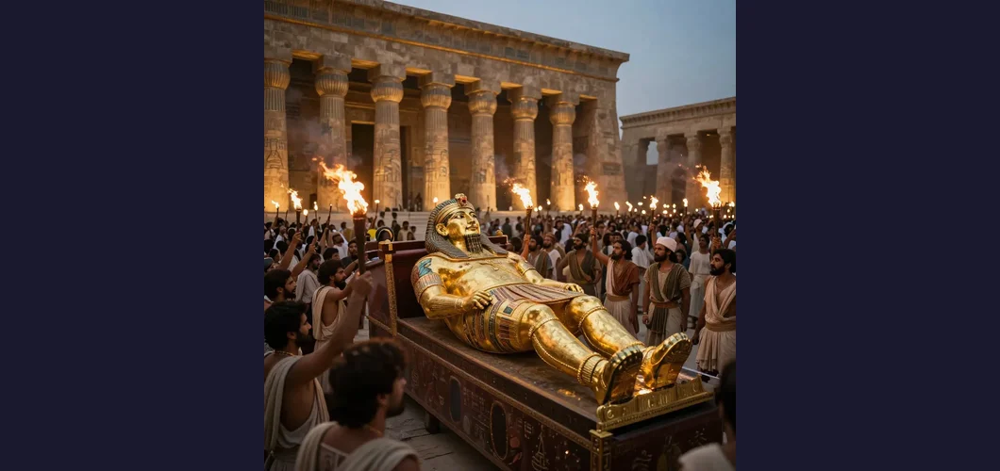

The Lost Tomb of Alexander the Great: The Greatest Archaeological Mystery of the Ancient World

The lost tomb of Alexander the Great remains one of archaeology's greatest unsolved mysteries
The year was 323 BCE. In the city of Babylon, a king lay dying in the palace of Nebuchadnezzar II. His name was Alexander the Great, and he was only thirty-two years old.
Alexander had beaten the huge Persian Empire. He had marched his armies to the edge of India. He had never lost a single battle. Many people call him the most successful army leader in history.
Nobody is sure what killed him. It may have been a fever, poison, or a sickness called typhoid. Or perhaps he was simply worn out and ill after years of war. His men asked who should get his empire. He is said to have answered, “To the strongest.”
Then a fight began. It was a fight for his empire, and also for his body. That fight went on for hundreds of years, and some of the most powerful people of the ancient world took part.
It ended in a great vanishing act. Alexander’s tomb was once among the most famous places in the ancient world. Roman emperors visited it. Historians described it with wonder. Then it simply disappeared. No one alive today knows where Alexander rests.
The story has everything. It has men who wanted power. It has a change of religion. And it shows that even the grandest building can be lost. It begins with a funeral carriage covered in riches. It passes through two great ancient cities. It ends with a blank space in the record.
People call the search for the tomb the “Holy Grail of archaeology.” Archaeology is the study of old things that people left behind. Since the 1800s, more than a hundred official teams have looked for the tomb. All have failed. It has been lost for more than sixteen hundred years.
When Alexander died, his generals began to fight for power at once. They are known as the Diadochi, which means the Successors. There was no clear heir. Alexander’s wife, Roxana, was going to have a baby, but the child would not be born for months. Within a few years the empire was cut into pieces.
A man named Perdiccas ruled in the king’s place for a time. He took charge of the funeral. He ordered a grand carriage to carry the body home to Macedonia. It was to go to the royal burial ground at Aegae, where the kings of Alexander’s family were buried. Today that place is called Vergina.
The historian Diodorus Siculus described the carriage. It was covered in gold. It had paintings and statues that showed Alexander’s victories. Sixty-four mules pulled it. It was like a moving monument to the dead king.
But the body never reached Macedonia. Ptolemy I Soter was one of Alexander’s most trusted generals, and he had taken control of Egypt. Around 321 BCE, he stopped the funeral march in Syria. Then he took the body to Egypt.
Ptolemy did not do this out of love. It was a clever plan. In the ancient world, the body of a great king gave power to the person who held it. With Alexander’s body in his hands, Ptolemy could say that he was the true ruler of Egypt. The plan worked. His family, the Ptolemies, ruled Egypt for nearly three hundred years.
Ancient writers say the body was prepared in Babylon in the Egyptian way. This is called embalming. It means treating a dead body so that it does not decay. The work took months and needed special skill.
Diodorus Siculus wrote that the body lay in a coffin of “hammered gold” that fitted closely around it. He said honey and spices kept the body very well. When Ptolemy’s men opened the coffin in Egypt, years after the death, people could still recognize Alexander’s face.
The Egyptian method was chosen on purpose. It linked Alexander to the pharaohs, the old kings of Egypt. That made Ptolemy’s family look like the rightful rulers too. Nearly three hundred years later, the Roman emperor Augustus visited the tomb. He is said to have seen Alexander’s face and placed a golden crown on the body.
At first, Ptolemy buried Alexander in Memphis, the ancient capital of Egypt. Memphis was where Ptolemy first ruled, so it made sense to keep Alexander close. The grave may have been in or near the temple of Nectanebo II at Saqqara. Nectanebo II was the last pharaoh who was born in Egypt.
In the 1800s, archaeologists found a temple of Nectanebo II near a place called the Serapeum of Saqqara. Some researchers think this was the first tomb.
Meanwhile a new city was growing on the coast of the Mediterranean Sea. It was called Alexandria, after Alexander himself. The rulers who came after Ptolemy saw that the king belonged in the city with his name. Around 280 BCE, Ptolemy II Philadelphus moved the body to Alexandria.
There it was placed in a huge tomb called the Soma, which means “the Body.” The Soma was a tomb and also a place of worship. It became one of the best-known sights of the ancient world.
For more than five hundred years, people traveled from all around the Mediterranean to see it. It was not only a grave. Powerful people came to stand beside the greatest conqueror the world had known. They hoped that some of his glory would pass to them.
Julius Caesar came in 47 BCE, after fighting in Alexandria in the Alexandrian War. The stories say he stood in front of Alexander’s coffin and cried. Perhaps he was thinking about his own life. At the same age, Alexander had won the known world, and Caesar had done much less.
Cleopatra VII, the last ruler of the Ptolemy family, visited too. She is said to have taken gold from the tomb to pay for her plans.
Augustus, who was then called Octavian, came in 30 BCE after he defeated Antony and Cleopatra. The historian Cassius Dio tells the story. Augustus laid a crown of flowers on Alexander’s body. Then he was asked if he also wanted to see the tombs of the Ptolemies. He is said to have replied, “I wished to see a king, not dead men.”
The story may be true or it may not. Either way, it shows how much Alexander’s body meant to the Romans.
The emperor Caligula is said to have visited and taken Alexander’s breastplate, the armor for his chest. Septimius Severus came around 200 CE. Some accounts say he sealed the tomb to stop people from stealing more.
His son Caracalla visited around 215 CE. He was said to love Alexander so much that he copied the way he moved. He wore the clothes of a Macedonian soldier. He even tried to copy Alexander’s wars. These visits are among the last times a trusted writer mentions the tomb.
After Caracalla, the record goes silent. During the next hundred and fifty years, Alexandria suffered one disaster after another. There was fighting over power. There was fighting between Christians and pagans, the people who followed the old gods. There were earthquakes and tsunamis, which are giant waves from the sea.
Late in the fourth century CE came the Theodosian Decrees. These laws ordered every pagan temple and shrine in the Roman Empire to close. Alexander’s tomb was a place of pagan worship. So it would have been an easy target. People may have destroyed it or used it for something else.
Some scholars think the tomb was destroyed in riots against the pagans at that time. A church leader named Theophilus of Alexandria led attacks on pagan temples. Others think earthquakes damaged the tomb. Or perhaps it was slowly buried as the ground level of the city rose. The city has also sunk a great deal over the centuries, because of earthquakes and the weight of new buildings.
Whatever happened, the Arabs conquered Egypt in 641 CE. By then, it seems, nobody knew where the tomb was. Cleopatra’s tomb has the same story. She was another ruler from the Ptolemy family, and her grave has never been found either. Both may be lost somewhere under the same ancient city.
Why is the search so hard? Modern Alexandria sits right on top of the ancient city. For centuries people have built, torn down, and filled in the land. Today it is a crowded city, and it is almost impossible to dig a large hole there.
The Soma probably stood in the old royal quarter. That area now lies under the modern city center. Much of it is under the water of the harbor, because the coast has sunk.
Several ideas remain. The most popular one says the tomb is still buried under the modern city. It could be near the Nebi Daniel mosque or in the Shatby district. There, a tool called ground-penetrating radar has found rooms under the ground. This radar sends signals into the earth to show what is hidden below.
A second idea says the sinking coast has put parts of the royal quarter under the Eastern Harbor. If so, the tomb may now be underwater.
A third idea comes from researchers such as Dr. Christian de Vartavan. They suggest that Alexander’s body never left Memphis. It may still be in the first tomb, at the Nectanebo II temple at Saqqara.
Still others believe the tomb was simply destroyed in the Christian riots long ago. Its stones were used in other buildings, and nothing is left to find.
None of these searches has given a clear answer. The Egyptian government does not allow digging in many areas. And the city is so crowded that a careful search of all of it is nearly impossible.
Alexander spent his life winning the world. He beat the Persian Empire, marched through Central Asia, and reached the Indus River. He founded cities with his name from Egypt to Afghanistan. People called him a god while he was still alive.
But he could not beat time. His tomb was built so that he would be remembered forever. It was so grand that Roman emperors crossed the sea to stand in front of it. Now the city that carries his name has swallowed it. The man who made the world his monument has no monument of his own.
He may lie under the streets of modern Alexandria. He may lie under the waters of its harbor. He may lie in a forgotten room at Saqqara. “To the strongest,” Alexander is said to have whispered as he died. In the end, time was stronger than all of them. So where is the man who conquered the world?
References & Further Reading
Britannica: Alexander the Great — Comprehensive biography of the Macedonian conqueror and his legacy
Britannica: Alexandria — History of the Egyptian city from its founding through late antiquity
📚 Recommended Reading: Alexander the Great by Robin Lane Fox (on Amazon) — As an Amazon Associate, we earn from qualifying purchases.
Editorial note: reconstructions are continuously revised as imaging and inscription studies improve. See our Editorial Policy.